การ์ดที่มีกรอบสีคือ รูปถ่ายเองจากคลัง รูปสมุนไพร — ใช้เป็น reference เทียบของจริงได้ · กดรูปเพื่อซูมความละเอียดสูง · กดชื่อเพื่อดูรสยา/สรรพคุณเต็ม
📷 สมุนไพรที่มีรูปถ่ายเอง — 132 ชนิด

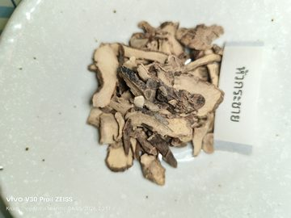
กระชาย 📷 รูปถ่ายเอง
หัว — รสเผ็ดร้อนขมหอม
หัว — แก้ปากเปื่อย ปากแตกเป็นแผล ขับระดูขาว แก้ใจสั่น แก้ปวดมวนในท้อง แก้บิดมูกเลือด บำรุงกำลัง


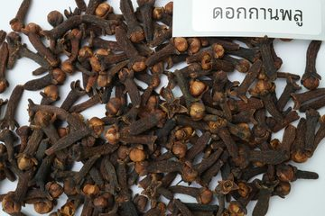
กานพลู 📷 รูปถ่ายเอง
ดอก — รสร้อน
ดอก — บำรุงธาตุ แก้ปวดท้อง แน่น จุกเสียด แก้รำมะนาด แก้ปวดฟัน แก้ปวดท้อง ท้องขึ้น แก้ท้องร่วง ชุบลำสีอุดฟันแก้ปวดฟัน ทุบ1 ดอกใส่ขวดนมให้เด็กรับประทาน

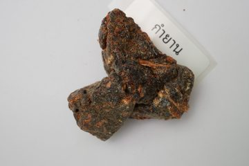
กำยาน 📷 รูปถ่ายเอง
ยาง (เรียกว่ากำยาน) — รสสุขุมหอม
ยาง (เรียกว่ากำยาน) — แก้ลม บำรุงเส้นเอ็น แก้หลอดลมอักเสบ สมานแผล แก้ขัดเบา

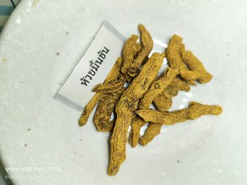
ขมิ้นชัน 📷 รูปถ่ายเอง
หัว — รสฝาดเอียน
หัว — แก้ไข้เพื่อดี คลั่งเพ้อ แก้ไข้เรื้อรังผอมเหลือง แก้โรคผิวหนัง แก้เสมหะและโลหิต แก้ท้องร่วง สมานแผล

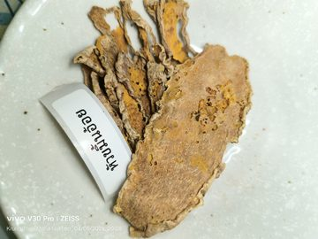
ขมิ้นอ้อย 📷 รูปถ่ายเอง
หัว — รสฝาดเฝื่อน
หัว — แก้ครั่นเนื้อครั่นตัว สมานลำไส้ แก้ระดูขาว ขับปัสสาวะ ตำพอกแก้ฟกบวม อักเสบ


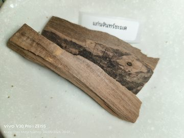
จันทน์ชะมด 📷 รูปถ่ายเอง
แก่น — รสขมหอม
แก่น — บำรุงหัวใจ แก้ลมวิงเวียน แก้คลื่นเหียนอาเจียน ทำให้ใจชื่นบาน สดชื่นแจ่มใส ชูกำลังใช้ทำยาหอม

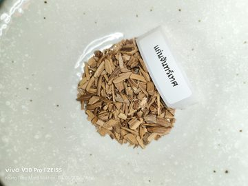
จันทน์เทศ 📷 รูปถ่ายเอง
เนื้อไม้และแก่น — รสขมหอมร้อน
เนื้อไม้และแก่น — แก้ไข้ดีเดือด ดีพลุ่ง แก้กระสับกระส่าย ตาลอยเผลอสติ บำรุงตับ ปอด น้ำดี

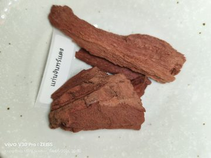
จันทน์แดง 📷 รูปถ่ายเอง
เนื้อไม้ และแก่น — รสขมเย็น
เนื้อไม้ และแก่น — แก้ไอ แก้ซางอันบังเกิดแต่ดี แก้เลือดออกตามไรฟัน แก้บาดแผล แก้ไข้เพื่อดีพิการทำให้ชื่นใจ แก้ร้อนดับพิษไข้ทุกชนิด ฝนทาแก้ฟกบวม


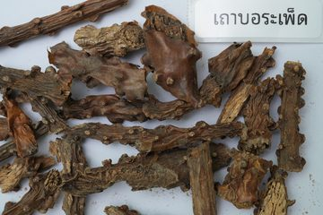
บอระเพ็ด 📷 รูปถ่ายเอง
เถา — รสขมเย็น
เถา — แก้พิษฝีดาษ ไข้เหนือ ไข้พิษ แก้ร้อนใน กระหายน้ำ ทำให้เนื้อเย็น สะอึก บำรุงกำลัง บำรุงน้ำดี บำรุงไฟธาตุ

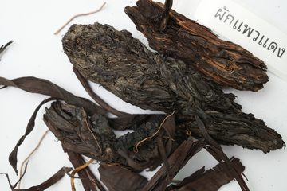
ผักแพวแดง 📷 รูปถ่ายเอง
ราก — รสร้อน
ราก — แก้ลม แก้กระเพาะอาหารพิการ อุจจาระหยาบ แก้ท้องมาน แก้ริดสีดวง แก้หืด ไอ แก้เส้นประสาทพิการ แก้ปวดเมื่อยตามข้อกระดูก

.jpg)
ฝักคูน 📷 รูปถ่ายเอง
เนื้อในฝัก — รสหวานเอียน
เนื้อในฝัก — ระบายท้อง ช่วยบรรเทาการแน่นหน้าอก ฟกช้ำ แก้ลมเข้าข้อและขัดข้อ


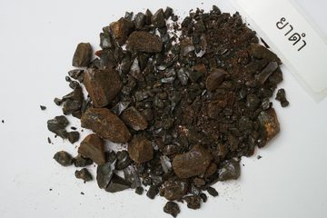
ยาดำ 📷 รูปถ่ายเอง
รสเหม็นขมจัด
ถ่ายท้อง ถ่ายพิษไข้ ถ่ายพยาธิไส้เดือน ตัวตืด ขับน้ำดี แต่ไซ้ท้อง ฝนกับสุราทาหัวฝี แก้อาการฟกบวม
ยาดำสะตุ 📷 รูปถ่ายเอง
ยาดำ — รสเหม็นขมจัด
ยาดำ — ถ่ายท้อง ถ่ายพิษไข้ ถ่ายพยาธิไส้เดือน ตัวตืด ขับน้ำดี แต่ไซ้ท้อง ฝนกับสุราทาหัวฝี แก้อาการฟกบวม

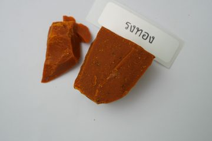
รงทอง 📷 รูปถ่ายเอง
ยาง (ฆ่าฤทธิ์แล้ว) — รสเอียนเบื่อ
ยาง (ฆ่าฤทธิ์แล้ว) — ถ่ายอย่างแรง ถ่ายลม ถ่ายน้ำเหลืองเสีย ถ่ายเสมหะ ถ่ายโลหิต ฝนกับหัวกะทิสดทาแผลพุพอง แก้ปวด และให้ล่อนออกดี

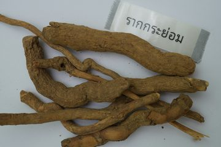
ระย่อม 📷 รูปถ่ายเอง
ราก — รสขมเมานิดหน่อย
ราก — แก้ปวดศีรษะเนื่องจากความดันโลหิตสูง แก้คลุ้มคลั่ง เนื่องจากดีและโลหิต ช่วยย่อยอาหารและระงับประสาท ถ้ากินจะมีอาการข้างเคียง คือ หน้าแดง ตัวแดง แน


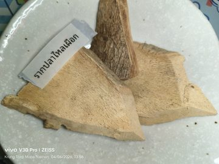
รากปลาไหลเผือก 📷 รูปถ่ายเอง
ราก — รสขมเบื่อเมาเล็กน้อย
ราก — ตัดไข้ทุกชนิด แก้วัณโรคระยะบวม ถ่ายพิษฝีในท้องและถ่ายพิษต่างๆ


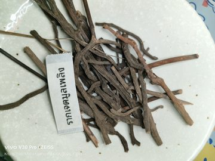
รากเจตมูลเพลิงแดง 📷 รูปถ่ายเอง
ราก — รสร้อน
ราก — บำรุงธาตุ บำรุงโลหิต ขับลมในลำไส้และกระเพาะอาหารให้เรอ แก้ท้องอืด เฟ้อ เสียด แน่นหน้าอก ทำให้ร่างกายเกิดความอบอุ่น ถ้ารับประทานมาก ทำให้แท้งลูก


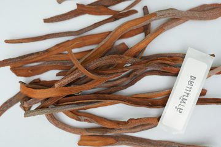
ลำพันแดง 📷 รูปถ่ายเอง
เหง้า — รสเค็มกร่อย
เหง้า — ขับโลหิตระดูสตรี ขับลมในลำไส้ แก้จุกเสียด แก้โลหิตระดูทำให้พิษให้คลั่งเพ้อ

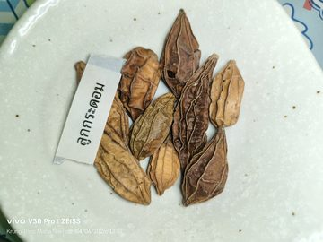
ลูกกระดอม 📷 รูปถ่ายเอง
ลูก — รสขม
ลูก — บำรุงน้ำดี แก้ดีแห้ง ดีฝ่อ ดีเลือด คลั่งเพ้อ เจริญอาหาร ทำให้โลหิตเย็น บำรุงมดลูก

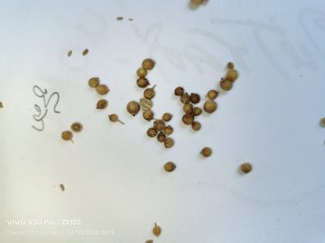
ลูกผักชีลา 📷 รูปถ่ายเอง
ลูก — รสขมฝาดร้อนหอม
ลูก — แก้ไข้เนื่องจากซาง แก้กระหายน้ำ บำรุงธาตุ แก้คลื่นเหียน อาเจียน ขับลมในลำไส้ แก้สะอึก แก้ตาเจ็บ

ลูกผักชีล้อม 📷 รูปถ่ายเอง
เมล็ด — รสผอมร้อนเล็กน้อย
เมล็ด — ขับลมในลำไส้ แก้ธาตุพิการ แก้ไอ แก้หอบ บำรุงปอด

ลูกมะคำดีควายสุม 📷 รูปถ่ายเอง
ผลแก่ — รสขม
ผลแก่ — แก้กาฬภายใน ดับพิษทั้งปวง บำรุงน้ำดี ต้มเอาฟองสุมศีรษะเด็ก แก้หวัดคัดจมูก สุมเป็นถ่าน สรรพคุณ ดับพิษร้อนภายใน แก้พิษไข้ พิษซาง แก้หอบเนื่องจาก


ลูกสมอทะเล 📷 รูปถ่ายเอง
ใบและผล — รสร้อน
ใบและผล — ถ่ายอุจจาระ ถ่ายลม ถ่ายโลหิตเป็นพิษ (ห้ามใช้ถ่ายในผู้ป่วยเป็นไข้) ใบนึ่งให้สุกเสียก่อนตากแห้งจึงใช้ทำยา


ว่านน้ำ 📷 รูปถ่ายเอง
เหง้า หรือ ราก — รสร้อนกลิ่นหอมแรง
เหง้า หรือ ราก — แก้บิด แก้ปวดท้อง แน่นจุกเสียด แก้ท้องขึ้นอืดเฟ้อ ฝนกับสุราทาหน้าอกเด็ก แก้ปวดและหลอดลมอักเสบ

ว่านร่อนทอง 📷 รูปถ่ายเอง
หัว — รสปร่า
หัว — ช่วยย่อยอาหาร แก้ท้องเสีย แก้บิดมูกเลือด คุมธาตุ แก้พิษตานซาง แก้พิษฝี พิษงู ตะขาบ แมงป่อง

สมอดีง 📷 รูปถ่ายเอง
ผล — รสขมฝาด
ผล — แก้พิษดี พิษโลหิต แก้ไอ ขับถ่ายโลหิตระดูสตรี ถ่ายระบายอุจจาระแรงกว่าสมอชนิดอื่นมาก


สมอเทศ 📷 รูปถ่ายเอง
—
ผลรสเปรี้ยวและฝาดจัด — ระบายอ่อนๆ ระบายเสมหะ ระบายลมรู้ถ่าย รู้ปิดเอง แก้เสมหะ ทำให้ลมเดินสะดวก

สมอไทย 📷 รูปถ่ายเอง
ผล — รสฝาดติดเปรี้ยว
ผล — ระบายอ่อนๆ แก้ลมป่วง แก้พิษร้อนภายใน คุมธาตุแก้ลมจุกเสียด รู้ผายธาตุ รู้ระบายรู้ถ่ายอุจจาระ ถ่ายพิษไข้ คุมธาตุในตัวเสร็จ แก้ไข้เพื่อเสมหะ

สมุลแว้ง 📷 รูปถ่ายเอง
เปลือกต้น — รสหอมฉุนปร่า
เปลือกต้น — แก้ลมวิงเวียน ใจสั่น แก้พิษหวัด กำเดา ขับลมในลำไส้ แก้ธาตุพิการ

.jpg)


หวายตะค้าสุม 📷 รูปถ่ายเอง
เถา ต้น — รสเย็น
เถา ต้น — แก้พิษร้อน แก้พิษไข้กาฬ แก้ชัก เพราะความร้อนสูง แก้สลบ แก้หอบ แก้ลิ้นกระด้างคางแข็ง เนื่องจากพิษไข้
หัวกระชาย 📷 รูปถ่ายเอง
หัว — รสเผ็ดร้อนขมหอม
หัว — แก้ปากเปื่อย ปากแตกเป็นแผล ขับระดูขาว แก้ใจสั่น แก้ปวดมวนในท้อง แก้บิดมูกเลือด บำรุงกำลัง


หัวดองดึง 📷 รูปถ่ายเอง
หัว — รสร้อนเมา
หัว — แก้โรคเรื้อน คุดทะราด แก้ปวดข้อ (รูมาติซั่ม) แก้กามโรค แก้พิษสัตว์กัดต่อย


เจตพังคี 📷 รูปถ่ายเอง
ราก — รสเผ็ดขื่นปร่า
ราก — แก้ท้องขึ้นปวดแน่นในท้อง ขับลมทำให้เรอ ฝนกับน้ำปูนใส ผสมกับมหาหิงคุ์และการบูรทาท้องเด็กอ่อน แก้ท้องขึ้นอืดเฟ้อ แก้ปวดท้อง ขับผายลม
เจตมูลเพลิงแดง 📷 รูปถ่ายเอง
ราก — รสร้อน
ราก — บำรุงธาตุ บำรุงโลหิต ขับลมในลำไส้และกระเพาะอาหารให้เรอ แก้ท้องอืด เฟ้อ เสียด แน่นหน้าอก ทำให้ร่างกายเกิดความอบอุ่น ถ้ารับประทานมาก ทำให้แท้งลูก


เถาวัลย์เปรียง 📷 รูปถ่ายเอง
เถา — รสเบื่อเอียน
เถา — ถ่ายเส้น ถ่ายกระษัย แก้เส้นเอ็นขอด เส้นตึง แก้ปวดเมื่อย ทำให้เส้นเอ็นหย่อน ขับปัสสาวะ ถ่ายเสหะลงสู่คูทวาร

เทียนขาว 📷 รูปถ่ายเอง
เมล็ด รสเผ็ดร้อนขม (ไม้ต้นเล็ก ๆ — ยี่หร่า)
บำรุงกำลัง ขับผายลม แก้เส้นศูนย์กลางท้องพิการ แก้ชีพจรอ่อนหรือพิการ นอนสะดุ้งผวา (โทษน้ำดี) แก้คลั่งเพ้อ

เทียนดำ 📷 รูปถ่ายเอง
เมล็ด รสเผ็ดขม · ใบและต้น/เปลือกต้น รสจืดเฝื่อน
เมล็ด: ขับเสมหะให้ลงสู่คูถทวาร ขับลมในลำไส้ แก้อาเจียน บำรุงโลหิต


เทียนเกล็ดหอย 📷 รูปถ่ายเอง
เมล็ด รสเผ็ดร้อนขมหอม
แก้ลมวิงเวียน หน้ามืด ตามัว แก้โลหิตจาง แก้เย็นชาปลายมือปลายเท้า

เทียนเยาวพาณี 📷 รูปถ่ายเอง
เมล็ด รสหวานกลิ่นหอม (คล้ายผักชีแต่โตกว่า)
กระจายเสมหะ กระจายลมที่ลั่นโครกครากในท้อง แก้จุกเสียด แก้ลมปั่นป่วนรอบขอบสะดือ แก้คลื่นเหียนอาเจียน

เทียนแดง 📷 รูปถ่ายเอง
เมล็ด รสเผ็ดร้อนขมเล็กน้อย (ไม้ต้นเล็ก ๆ คล้ายผักชี)
ขับเสมหะ แก้ลม แก้น้ำดีพิการ แก้ลมเสียดแทง แก้คลื่นเหียนอาเจียน

เนระพูสี 📷 รูปถ่ายเอง
ต้น — รสฝาด
ต้น — แก้บิด มูกเลือด แก้ไข้ท้องเสีย (ไข้รากสาด) แก้ปวดเบ่ง แก้ไข้เหนือ แก้ไข้พิษ ไข้กาฬ
เนื้อลูกสมอเทศ 📷 รูปถ่ายเอง
—
ผลรสเปรี้ยวและฝาดจัด — ระบายอ่อนๆ ระบายเสมหะ ระบายลมรู้ถ่าย รู้ปิดเอง แก้เสมหะ ทำให้ลมเดินสะดวก
เนื้อลูกสมอไทย 📷 รูปถ่ายเอง
ผล — รสฝาดติดเปรี้ยว
ผล — ระบายอ่อนๆ แก้ลมป่วง แก้พิษร้อนภายใน คุมธาตุแก้ลมจุกเสียด รู้ผายธาตุ รู้ระบายรู้ถ่ายอุจจาระ ถ่ายพิษไข้ คุมธาตุในตัวเสร็จ แก้ไข้เพื่อเสมหะ

เนื้อในเม็ดสะบ้ามอญสุม 📷 รูปถ่ายเอง
เมล็ด — รสเมา
เมล็ด — แก้โรคผิวหนัง ผื่นคัน สุมเป็นถ่าน แก้พิษไข้ตัวร้อน

เปราะหอม 📷 รูปถ่ายเอง
หัว ใบ — รสร้อนหอม
หัว ใบ — ขับลมในลำไส้ให้ผายเรอ แก้ท้องขึ้นอืดเฟ้อ ทำยาสุมขม่อมเด็ก แก้หวัด กำเดา ซางชัก และลมซาง

เปลือกสมุลแว้ง 📷 รูปถ่ายเอง
เปลือกต้น — รสหอมฉุนปร่า
เปลือกต้น — แก้ลมวิงเวียน ใจสั่น แก้พิษหวัด กำเดา ขับลมในลำไส้ แก้ธาตุพิการ

เปลือกเพกา 📷 รูปถ่ายเอง
เปลือกต้น — รสฝาดเย็นขมเล็กน้อย
เปลือกต้น — ตำกับสุรา ทา พ่นตามตัวสตรีที่ทนการอยู่ไฟไม่ได้ ทำให้หนังชา สมานแผล ทำให้น้ำเหลืองปกติ ดับพิษโลหิต


.jpg)
แก่นสน 📷 รูปถ่ายเอง
แก่น — รสขมเผ็ดมัน
แก่น — แก้ไข้เพื่อเสมหะ แก้ประสาทฟุ้งซ่าน แก้อ่อนเพลีย แก้คลื่นเหียนอาเจียน บำรุงไขมันในกระดูก กระจายลม


โกฐกระดูก 📷 รูปถ่ายเอง
เปลือกราก รสร้อน กลิ่นหอม (ไม้ต้นขนาดเล็กถึงกลาง จากประเทศจีน)
แก้ลมวิงเวียน หน้ามืด ตาลาย ขับลมในลำไส้ แก้โลหิตจาง
.jpg)
โกฐกักกรา 📷 รูปถ่ายเอง
ราก รสฝาดน้อย เผ็ดร้อนซ่า (ไม้ต้นขนาดกลาง รากส่งจากจีน อินเดีย ฮ่องกง)
ขับลมในลำไส้ แก้คลื่นเหียนอาเจียน แก้ดีพิการ ปวดหัวตัวร้อน นอนสะดุ้ง แก้ริดสีดวงทวาร

โกฐก้านพร้าว 📷 รูปถ่ายเอง
รสขมจัด · มีกลิ่นหอมเฉพาะตัว (เหง้าแห้ง มีข้อคล้ายหางหนูมะพร้าว)
ตำราโบราณไทย: แก้ไข้เรื้อรัง แก้ไข้ซึ่งมีอาการสะอึก แก้หอบ แก้เสมหะเป็นพิษ

โกฐจุฬาลัมพา 📷 รูปถ่ายเอง
ใช้ทั้งต้น รสขมกลิ่นหอม (ไม้ล้มลุกเนื้ออ่อน เป็นพุ่มขนาดย่อม)
แก้ไข้เจรียง แก้ไข้ที่มีผื่นขึ้นตามตัว (หัด เหือด สุกใส ดำแดง ฝีดาษ ไข้รากสาด) แก้หืด ไอ แก้ไข้เพื่อเสมหะ

โกฐน้ำเต้า 📷 รูปถ่ายเอง
ราก (ปอกเปลือก นึ่งแล้วตากแห้ง) รสฝาดหอม (ไม้พุ่มขนาดใหญ่)
แก้ธาตุพิการ อาหารไม่ย่อย บำรุงธาตุ แก้ท้องอืด ขับลมในลำไส้ ขับปัสสาวะและอุจจาระให้เดินสะดวก ระบายท้อง

โกฐพุงปลา 📷 รูปถ่ายเอง
ลูก รสฝาด (ไม้อาศัยเกาะต้นไม้อื่น คล้ายกล้วยไม้ เป็นไม้ล้มลุกเนื้ออ่อน)
แก้ท้องร่วง แก้อาเจียน แก้บิด แก้ปวดเบ่ง แก้เสมหะพิการ สมานแผล

.jpg)
.jpg)
โกฐเขมา 📷 รูปถ่ายเอง
รสหวานอมขมเล็กน้อย เผ็ดร้อน · มีกลิ่นหอมเฉพาะ (เหง้าแห้ง)
ยาบำรุงธาตุ ขับลม บำรุงกำลัง · เจริญอาหาร · ขับปัสสาวะ
.jpg)

ใบกะเพรา 📷 รูปถ่ายเอง
รสเผ็ดร้อน
เป็นยาตั้งธาตุ แก้ปวดท้อง ท้องขึ้น จุกเสียดในท้อง ใช้แต่งกลิ่นแต่งรสได้

.jpg)

ใบเทียน 📷 รูปถ่ายเอง
เมล็ด — รสเผ็ดร้อนขมหอม
เมล็ด — แก้ลมวิงเวียน หน้ามืด ตามัว แก้โลหิตจาง แก้เย็นชาปลายมือปลายเท้า

ไพล 📷 รูปถ่ายเอง
หัว — รสฝาดขื่นเอียน
หัว — ตำคั้นผสมกับเกลือสะตุ 1 ช้อนโต๊ะรับประทานถ่ายพิษบิด ขับลมในลำไส้ ขับประจำเดือนสตรี ฝนทาแก้เคล็ดบวมยอก และผสมกับน้ำมันเบนซิน ทาแก้เหน็บชาชนิดบวมส
เทียนขม 📷 รูปถ่ายเอง
เมล็ด รสขม (ลักษณะไม่ปรากฏ เพราะส่งมาจากต่างประเทศ)
แก้ไข้ แก้ดีพิการ แก้ครั่นเนื้อครั่นตัว นอนสะดุ้งผวา หลับ ๆ ตื่น ๆ


โกฐกะกลิ้ง 📷 รูปถ่ายเอง
เมล็ด รสขมเมา (มีสารสตริกนิน) · ใบ รสเมาเบื่อ
แก้ลมอัมพาต อิดโรย บำรุงธาตุ บำรุงหัวใจ เจริญอาหาร ขับน้ำย่อย กระตุ้นประสาทส่วนกลาง · ใบตำพอกแก้แผลเน่าเปื่อยเรื้อรัง
🌐 สมุนไพรที่ใช้รูปจากอินเทอร์เน็ต — 67 ชนิด


กระเทียม 🌐 รูปจากอินเทอร์เน็ต
หัว — รสร้อนฉุน
หัว — แก้ไอ แก้โรคผิวหนัง กลาก เกลื้อน แผลเน่า เนื้อร้าย บำรุงธาตุ ขับโลหิตระดู แก้โรคประสาท น้ำคั้นจากหัว หยอดหู แก้ปวดหูและหูอื้อ
กระเทียมคั่ว 🌐 รูปจากอินเทอร์เน็ต
หัว — รสร้อนฉุน
หัว — แก้ไอ แก้โรคผิวหนัง กลาก เกลื้อน แผลเน่า เนื้อร้าย บำรุงธาตุ ขับโลหิตระดู แก้โรคประสาท น้ำคั้นจากหัว หยอดหู แก้ปวดหูและหูอื้อ


ข่าต้น 🌐 รูปจากอินเทอร์เน็ต
เนื้อไม้และราก — รสร้อนกลิ่นหอมฉุน
เนื้อไม้และราก — แก้ท้องขึ้นอืดเฟ้อ ขับลมในลำไส้ แก้ลมขึ้นเบื้องสูง หน้ามืด วิงเวียน


ผิวมะงั่ว 🌐 รูปจากอินเทอร์เน็ต
ราก — รสปร่าจืด
ราก — กระทุ้งพิษ แก้ผิดสำแดง แก้พิษฝีภายใน แก้เสมหะเป็นโทษ


ผิวส้มเขียวหวาน 🌐 รูปจากอินเทอร์เน็ต
เปลือกลูก — รสร้อนหอม
เปลือกลูก — แก้ลมวิงเวียน หน้ามืด ตาลาย ใจสั่น


ฝักส้มป่อย 🌐 รูปจากอินเทอร์เน็ต
ใบ — รสเปรี้ยวฝาดเล็กน้อย
ใบ — ถ่ายเสมหะ ล้างเมือกมันในลำไส้ แก้บิด ฟอกล้างโลหิตระดู ประคบให้เส้นเอ็นอ่อน

ฝางเสน 🌐 รูปจากอินเทอร์เน็ต
แก่น — รสขมขื่นฝาด
แก่น — แก้ท้องร่วง แก้ธาตุพิการ แก้ร้อน แก้โลหิตออกทางทวารหนัก แก้ไข้กำเดา แก้เสมหะ

พญารากขาว 🌐 รูปจากอินเทอร์เน็ต
ราก — รสขม บำรุงธาตุ เจริญอาหาร แก้อ่อนเพลีย กินเป็นยาชูกำลังหลังฟื้นไข้


รากขี้กาแดง 🌐 รูปจากอินเทอร์เน็ต
ลูก — รสขมจัด
ลูก — บำรุงน้ำดี แก้พิษเสมหะและโลหิต ถ่ายและล้างโทษเสมหะ และอุจจาระให้ตก


ลูกกระวาน 🌐 รูปจากอินเทอร์เน็ต
ใบ — รสเผ็ดเล็กน้อยกลิ่นหอม
ใบ — ขับลมให้ผายเรอ ขับเสมหะ แก้ไข้เซื่องซึม


ลูกมะแว้งต้น 🌐 รูปจากอินเทอร์เน็ต
ราก — รสเปรี้ยวเอียน
ราก — แก้ไข้สันนิบาต กัดเสมหะ แก้น้ำลายเหนียว ขับปัสสาวะ


สักขี 🌐 รูปจากอินเทอร์เน็ต
แก่น — รสเผ็ดฝาด
แก่น — บำรุงธาตุ บำรุงโลหิต ขับเสมหะ แก้เลือดออกตามไรฟัน แก้คุดทะลาด แก้บิดมูกเลือก

สารส้ม 🌐 รูปจากอินเทอร์เน็ต
—
สารส้ม ก้อนสีขาว — สมานได้ทั้งภายนอกและภายใน ชะล้างระดูขาว แก้บาดแผล ทำให้หนองแห้ง แก้แผลในปากในคอ ขับปัสสาวะ แก้นิ่ว


หัวกระเทียม 🌐 รูปจากอินเทอร์เน็ต
หัว — รสร้อนฉุน
หัว — แก้ไอ แก้โรคผิวหนัง กลาก เกลื้อน แผลเน่า เนื้อร้าย บำรุงธาตุ ขับโลหิตระดู แก้โรคประสาท น้ำคั้นจากหัว หยอดหู แก้ปวดหูและหูอื้อ

หัวกลอย 🌐 รูปจากอินเทอร์เน็ต
หัว — รสขื่นคัน
หัว — กัดเถาดานเป็นก้อนแข็งอยู่ในท้อง หุงกับน้ำมัน ทาแผล กัดหนองและฝ้า

หัวบุก 🌐 รูปจากอินเทอร์เน็ต
หัว — รสเบื่อเมาคัน
หัว — กัดเถาคาน กัดเสมหะ หุงกับน้ำมันทาแผลกัดฝ้า กัดหนอง


เปลือกหว้า 🌐 รูปจากอินเทอร์เน็ต
เปลือกต้น — รสฝาด
เปลือกต้น — แก้บิด แก้ปากเปื่อย คอเปื่อยเป็นเม็ดเนื่องจากร้อนในแก้น้ำลายเหนียว

เม็ดมะกอกสุม 🌐 รูปจากอินเทอร์เน็ต
เมล็ด — รสเปรี้ยวฝาด
เมล็ด — แก้เสมหะในลำคอ ทำให้ชุ่มคอ แก้กระหายน้ำ


ใบกระพังโหม 🌐 รูปจากอินเทอร์เน็ต
ใบ เถา — รสกลิ่นเหม็น
ใบ เถา — แก้ตานซาง แก้ตัวร้อน ขับลม แก้ธาตุพิการ ท้องเสีย เจริญอาหาร ขับพยาธิไส้เดือน
ใบกระวาน 🌐 รูปจากอินเทอร์เน็ต
ใบ — รสเผ็ดเล็กน้อยกลิ่นหอม
ใบ — ขับลมให้ผายเรอ ขับเสมหะ แก้ไข้เซื่องซึม

ใบตานหม่อน 🌐 รูปจากอินเทอร์เน็ต
ใช้ทั้งต้น — รสเบื่อเย็น
ใช้ทั้งต้น — แก้พิษตานซาง บำรุงเนื้อหนังให้ชุ่มชื่น คุมธาตุ ขับไส้เดือนในท้อง


ใบส้มป่อย 🌐 รูปจากอินเทอร์เน็ต
ใบ — รสเปรี้ยวฝาดเล็กน้อย
ใบ — ถ่ายเสมหะ ล้างเมือกมันในลำไส้ แก้บิด ฟอกล้างโลหิตระดู ประคบให้เส้นเอ็นอ่อน

ใบหมากผู้ 🌐 รูปจากอินเทอร์เน็ต
ใบ — รสจืด
ใบ — แก้ไข้ตัวร้อน เหือด หัด สุกใส ดำแดง ต้มอาบ แก้คันตามผิวหนัง